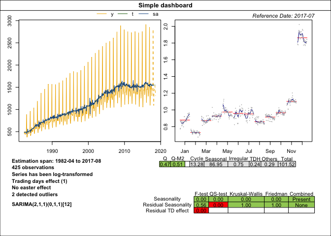
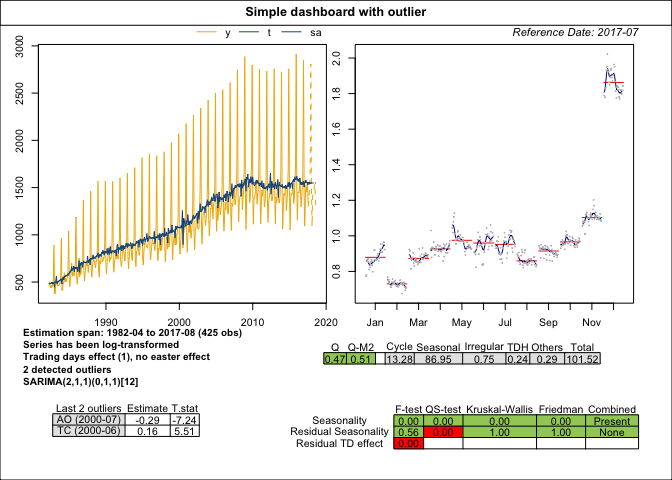

rjd3report is an extension of the R packages around JDemetra+ 3.x available at https://github.com/rjdverse. The rjd3report package provides help to the quality assessment by producing different dashboards and reports (with Quarto) describing seasonal adjustment models.
rjd3report requires Java SE 21 or later version. To render reports, Quarto must also be installed.
# Install development version from GitHub
# install.packages("devtools")
remotes::install_github("AQLT/rjd3report")
library(rjd3report)
y <- rjd3toolkit::ABS$X0.2.09.10.M
sa_mod <- rjd3x13::x13(y)
dashboard_data <- simple_dashboard(sa_mod)
plot(dashboard_data, main = "Simple dashboard")
dashboard_data2 <- simple_dashboard2(sa_mod)
plot(dashboard_data2, main = "Simple dashboard with outlier")
sa_preprocessing(), sa_decomposition() and sa_diagnostics() describe a seasonal adjustment model; sa_report() gathers them (with plots) for one model, a list of models or a whole workspace. In a Quarto (or R Markdown) document, the results are rendered automatically whatever the output format (HTML, PDF with LaTeX or Typst, Word): no results: asis nor format argument needed. The tables are built with tinytable.
sa_ts <- rjd3tramoseats::tramoseats(y)
# In a chunk of a Quarto document:
sa_diagnostics(sa_mod)
sa_report(list(X13 = sa_mod, `TRAMO-SEATS` = sa_ts))
# Directly render a report from a Quarto template:
render_report(list(X13 = sa_mod, `TRAMO-SEATS` = sa_ts), "report.html")
render_report("path/to/workspace.xml", "report.pdf", output_format = "typst")
# To customize the template:
use_report_template("my_template.qmd")